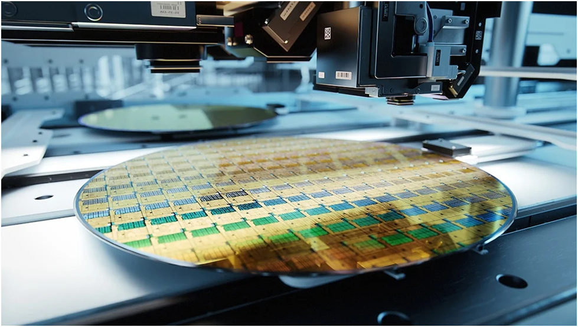

Vision Sensor
A Vision Sensor is an intelligent optical device used in industrial automation to inspect, detect, and measure objects.
- It is essentially a smart camera with built-in image processing capabilities.
- It can detect presence/absence, position, orientation, shape, color, size, and defects of objects.
- Vision sensors are widely used in manufacturing, quality control, robotics, and packaging industries.

Difference from Regular Cameras:
- A regular camera only captures images.
- A vision sensor captures and analyzes images and produces an output (e.g., pass/fail) without needing a separate computer.
Components
A typical vision sensor consists of:
- Camera / Imaging Device
- Captures images of the target object.
- Can be monochrome or color, depending on application.
- Lighting System
- Ensures proper illumination for clear image capture.
- Can be LED, ring light, backlight, or dome light.
- Optics / Lens
- Focuses the light reflected from the object onto the sensor.
- Determines field of view, resolution, and depth of focus.
- Image Processing Unit
- Built-in processor that analyzes the captured image using algorithms.
- Can detect shape, color, size, position, or defects.
- Communication/Output Interface
- Sends signals to PLC, robots, or alarms based on the inspection.
- Common outputs: digital (ON/OFF), analog, or network protocols (Ethernet/IP, Modbus, etc.).
Working
The working of a vision sensor can be summarized in three main steps:
- Image Acquisition
- The camera captures an image of the object under proper illumination.
- Image Processing & Analysis
- The built-in processor applies algorithms to detect features:
- Presence/absence
- Color inspection
- Dimensional measurement
- Pattern or shape recognition
- Defect detection
- Output/Decision
- Based on analysis, the vision sensor sends a signal to the control system:
- Example: Conveyor stops if a defective product is detected.
Applications
1. Pattern recognition
Pattern recognition mainly refers to the identification of objects with known rules, including
simple recognition of shape, color, pattern, number, barcode, etc.
There are also recognitions with larger or more abstract information, such as face, fingerprint,
iris recognition, etc.

2. Visual positioning
Mainly refers to the procedure that accurately acquires both the coordination and angle of the
object.
Positioning is a very basic but vital function in terms of machine vision applications. The
quality of software/algorithm is directly tied to the final result of this process.

3. Measuring
Measuring mainly refers to calibrating the acquired image pixel information into commonly used
measurement units, and then accurately calculating the geometric dimensions that need to be
acquired from the image.
The advantages of machine vision measuring, compared to traditional methods, are high precision,
high throughput and complex morphology measurement. For example, some high-precision products
only used to be sampled due to the difficulty of human eye measuring, but with machine vision,
full inspection can be achieved.

4. Appearance inspection
Appearance inspection mainly refers to the inspection of product appearance defects, the most common of which include surface assembly defects (such as missing assembly, mixing, mismatching, etc.), surface printing defects (such as multiple printing, missing printing, reprinting, etc.) and surface shape defects (such as broken edges, protrusions, pits, etc.). Since product appearance defects are usually very diverse, inspection therefore can be difficult in practice.